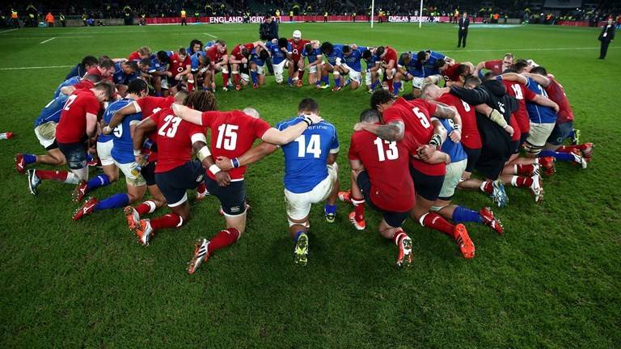

En el 2009, los países miembros de World Rugby identificaron Integridad, Pasión, Solidaridad, Disciplina y Respeto como las características definitorias en la construcción del carácter del rugby. Estos son ahora reconocidos como los valores del rugby y se han incorporado a la carta (Playing Charter) de World Rugby, un documento guía que apunta a preservar el carácter único del rugby y su ética tanto dentro como fuera del campo. Estos valores fundamentales le permiten a los participantes inmediatamente entender la naturaleza del rugby y lo que lo diferencia de otros deportes, al ser jugado por personas de todos los tamaños y talles.
Cuales son estos valores?
La integridad es parte central del armado del rugby y se genera a través de la honestidad y el juego limpio.
La gente de rugby tiene un apasionado entusiasmo por el juego. El rugby genera excitación, un enlace emocional y una sensación de pertenencia a una familia global de rugby.
El rugby provee un espíritu de unidad que lleva a amistades duraderas, camaradería, trabajo en equipo y lealtad que trasciende las diferencias culturales, geográficas, políticas y religiosas.
La disciplina es una parte fundamental del rugby tanto dentro como fuera de un terreno de juego y se ve reflejada en la adhesión a las reglas, reglamentos y los valores fundamentales del rugby.

El respeto por los compañeros, rivales, oficiales de partidos y todos aquellos involucrados en el rugby es algo supremo.